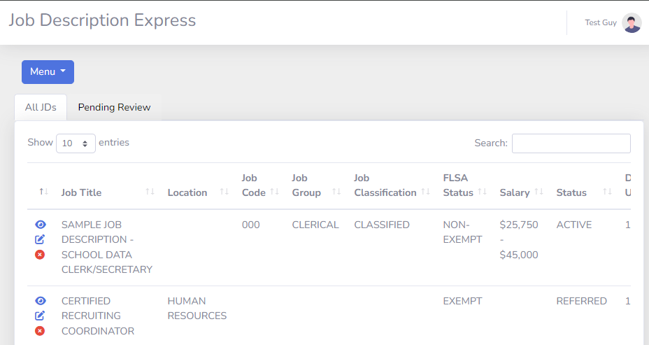
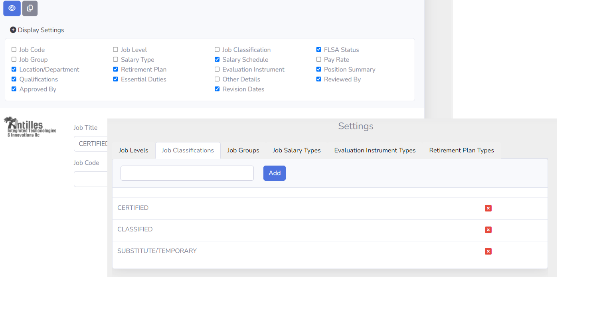
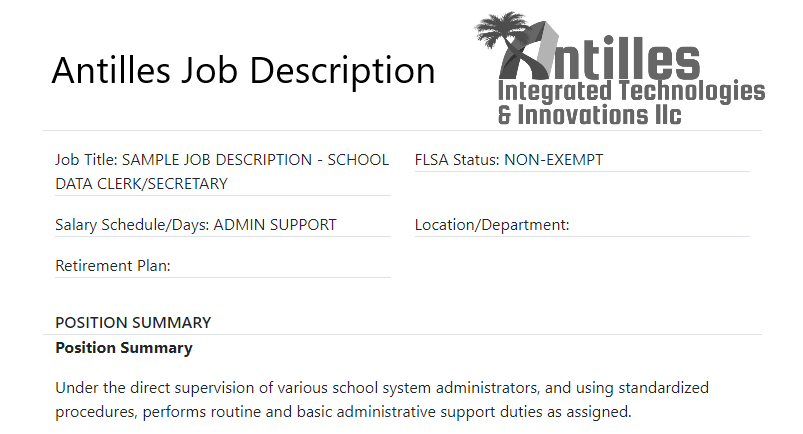

Map the workflow
Understand the people, steps, decisions, and outputs that make the process work today.
Software company and application studio
Antilles IT builds practical applications for organizations that need cleaner workflows, better internal tools, and software that fits the way their teams actually operate.

A software company built around practical application delivery.
The problem
Teams often run important work through spreadsheets, shared documents, email threads, and disconnected systems. Antilles IT turns those repeatable workflows into focused applications that are easier to use, maintain, and expand.
Critical workflows live in scattered files, inboxes, or one-off tools.
Teams repeat manual steps because the right software does not exist yet.
New requirements keep arriving, but the underlying system is hard to extend.
The approach
Antilles IT starts with the work people actually need to complete, then builds application experiences that are specific enough to be useful and structured enough to grow into a product portfolio.
Understand the people, steps, decisions, and outputs that make the process work today.
Create software that handles a specific operational need without adding unnecessary complexity.
Use the first app as a working product story, then repeat the pattern for future applications.
Add modules, integrations, and new app views as the business finds the next workflow to improve.
Product case study
Job Description Express is the first application example in the Antilles IT portfolio: a focused product built around the real job-description workflow used by K-12 HR teams.


Delivery pattern
Identify the workflow, users, data, and outcome the application needs to support.
Shape the screens, decisions, and user flow around the real work.
Develop the application with the right data model, interface, and admin controls.
Release the app, support adoption, and use the pattern for future additions.
Application portfolio
Job Description Express is the current proof point, but the site structure is designed for more applications to be added later. Each future app can have its own use case, screenshots, workflow story, and request-a-demo path.
Company
Antilles Integrated Technologies & Innovations LLC is based in the Atlanta area and focuses on practical software applications for real-world operational needs.
Start with the current Job Description Express case study, or talk with Antilles IT about the next operational app your organization needs.